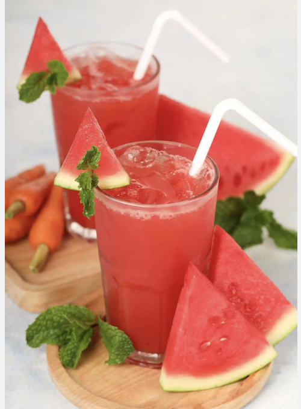
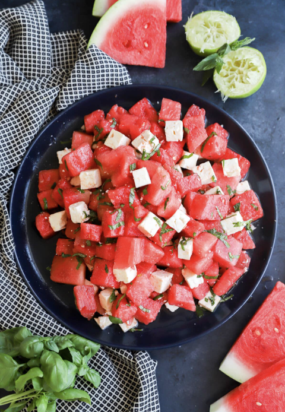

Throughout the world watermelon are eaten differently.
In Greece, watermelons are often eaten in a cold salad paired with feta cheese, mint, and olive oil, and is typically served as an appetizeer.
In China, the rind of the watermelon is saved, marinated in ginger, garlic, and soy sauce, and used in a stir fry.
In Brazil, fresh blended watermelon juice with ice is sold year round due to consistent cultivation of them.

